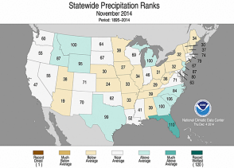
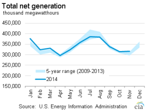
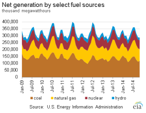
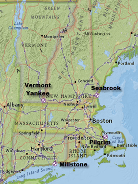
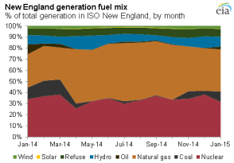
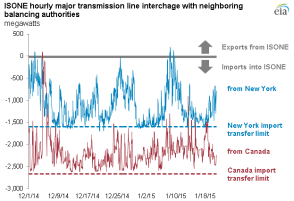

Electricity Monthly Update
With Data for November 2014 | Release Date: Jan. 26, 2015 | Next Release Date: Feb. 24, 2015
Previous Issues
Highlights: November 2014
- Heating Degree Days were up 7.2% compared to last November as many States east of the Rockies experienced below average temperatures during the month.
- November wholesale natural gas prices in New York City ($9.25/MMBtu) and New England ($10.74/MMBtu) increased significantly from the previous month as the country begins to enter the winter months.
- Coal stockpiles increased 4% from the pervious months, or just over 5.5 million tons, as the U.S. continued its build-up of coal stockpiles for use in the winter months.
Key Indicators
| November 2014 | % Change from November 2013 | |
|---|---|---|
| Total Net Generation (Thousand MWh) |
317,176 | 1.1% |
| Residential Retail Price (cents/kWh) |
12.46 | 3.1% |
| Retail Sales (Thousand MWh) |
282,002 | 0.9% |
| Heating Degree-Days | 611 | 7.2% |
| Natural Gas Price, Henry Hub ($/MMBtu) |
4.23 | 12.8% |
| Natural Gas Consumption (Mcf) |
627,008 | -0.3% |
| Coal Consumption (Thousand Tons) |
64,688 | -1.8% |
| Coal Stocks (Thousand Tons) |
141,742 | -9.0% |
| Nuclear Generation (Thousand MWh) |
65,140 | 0.3% |



Vermont Yankee nuclear facility retires after 42 years of commercial operation
 Source: U.S. Energy Information Administration, State Profile and Energy EstimatesOn December 29, 2014, Entergy shut down its Vermont Yankee nuclear facility after 42 years in service. Located in southeast Vermont along the Connecticut River, Vermont Yankee was a 604 megawatt boiling water reactor that began commercial operation in 1972. It has generated nearly five million megawatt hours of electricity per year since 2010, accounting for 4% of New England's total electric generation and over 70% of generation in the state of Vermont in that time period.
Entergy submitted its Post-Shutdown Decommissioning Activities Report and the Site-Specific Decommissioning Cost Estimate to the U.S. Nuclear Regulatory Commission on December 23, 2014. The decommissioning process is lengthy and can take decades to fully complete dismantling, decontamination, and site restoration activities. Entergy currently estimates total decommissioning costs of more than $1.2 billion. These costs include $817 million for license termination (a broad category encompassing costs such as labor, equipment, and materials, and the removal of plant systems and components), $368 million for spent fuel management and $57 million for site restoration.
With the closure of Vermont Yankee, there are now 99 nuclear units in the United States with a combined summer nameplate capacity of 98,620 megawatts. New England has dealt with the closure of nuclear units before, with the retirement of the 560 megawatt Connecticut Yankee unit in 1996 and the 870 megawatt Maine Yankee in 1997. Four nuclear units are currently active in New England: Millstone 2 and 3 in Connecticut, Pilgrim Nuclear Power Station in Massachusetts and Seabrook in New Hampshire. These units have a combined summer nameplate capacity of 4,026 megawatts and had an average capacity factor of just over 90% in 2014 (through October).
The nearly five million megawatt hours of generation historically produced at Vermont Yankee per year can be replaced in several ways. Existing generators in New England can operate at higher rates. New England's generation is dominated by natural gas and nuclear units, which combined for 77% of ISONE generation in 2014. As the four existing nuclear units already operate at maximum capacity and renewable sources generate power on a variable basis, the additional generation would come largely from natural gas, coal, or petroleum-fueled units.
 Source: U.S. Energy Information Administration, based on ISO New EnglandNew England could also import more electricity along its existing transmission ties to neighboring electricity grids. The Independent System Operator of New England (ISONE) has interconnections to Canada and New York and consistently imports several thousand megawatts of electricity each hour along those lines. These electricity imports met 14% of New England's demand in 2013, according to ISONE.
 Source: U.S. Energy Information Administration, based on ISO New EnglandTransmission capacity into New England could also be expanded. The Northern Maine Independent System Administrator (NMISA) traditionally has had more generating capacity than needed and is isolated from the rest of New England, with ties only to Canada. NMISA is currently considering ways to access the New England electrical grid directly, which would bring additional generating capacity into the New England market. Hydro-Quebec is also in the approval process with its Northern Pass transmission project. If constructed, Northern Pass would have the potential to bring up to 1,200 megawatts of electricity into New England.
Electricity demand and demand growth could also be lowered through increased energy efficiency and demand response programs to counteract the retirement of generating units. ISONE currently counts 2,100 megawatts of demand resources (load management, distributed generation and energy-efficiency programs) and expects this number to increase in the coming years.
Principal Contributor:
Tim Shear
(Tim.Shear@eia.gov)
End Use: November 2014
Retail rates/prices and consumption
In this section, we look at what electricity costs and how much is purchased. Charges for retail electric service are based primarily on rates approved by state regulators. However, a number of states have allowed retail marketers to compete to serve customers and these competitive retail suppliers offer electricity at a market-based price.
EIA does not directly collect retail electricity rates or prices. However, using data collected on retail sales revenues and volumes, we calculate average retail revenues per kWh as a proxy for retail rates and prices. Retail sales volumes are presented as a proxy for end-use electricity consumption.
Average revenue per kWh by state
November was the 24th straight month of year-over-year total average revenue per kilowatthour increases. 41 states were higher, with just 9 states and the District of Columbia down for the month compared to last year. Illinois had the largest increase, up nearly 14% in November, and ten states, mostly east of the Mississippi River, were up between 5%-10%. Iowa, Hawaii and Louisiana had the largest average revenue per kilowatthour decreases, with each down 6-7% from last November.
Total average revenues per kilowatthour were 10.15 cents in November, 3.3% higher than last year. The three major sectors were all up for the month. The commercial sector saw the largest increase, up 4.2% to 10.55 cents, followed by the residential sector, up 3.1% to 12.46 cents and the industrial sector, up 1.2% to 6.67 cents.
Total retail sales volumes totaled 282,002 GWh, which was up 0.9% from last November. All sectors had year-over-year increases, with the transportation sector, though small, up 13.4%.
Retail sales
November electric industry retail sales were higher across much of the country this year as many states experienced unusually cold weather. Ten states in the Midwest and Southeast had a top-5 coldest November on record and increases in retail sales volumes were centered in those regions. The state with the largest increase, however, was North Dakota, whose retail sales volume changes have been largely impervious to weather conditions as of late due to increases in oil and gas activities in the state (though this could change given recent developments in world oil markets). It led the 34 states and the District of Columbia that were higher with an 8.2% increase. West Virginia and Louisiana were the other states with retail sales increases greater than 5%.

Heating degree days (HDDs) were higher across the vast majority of states as November weather was much colder than normal. Alabama, South Dakota, Louisiana, Minnesota, Georgia, Mississippi and Wisconsin all had HDD increases greater than 15%. Twenty-five states from North Dakota to Louisiana and Pennsylvania to Georgia had more than 100 HDDs than normal (increases of 11%-57% depending on the state).
Only a few states in the Northeast and Southwest had lower levels of HDDs than one year ago. California had the largest drop, down 17%, followed by Alaska, down 15%, and the District of Columbia, down over 7%. Nevada, New York and four New England states were the only other states with lower HDDs than a year ago.
Resource Use: November 2014
Supply and fuel consumption
In this section, we look at the resources used to produce electricity. Generating units are chosen to run primarily on their operating costs, of which fuel costs account for the lion's share. Therefore, we present below, electricity generation output by fuel type and generator type. Since the generator/fuel mix of utilities varies significantly by region, we also present generation output by region.
Generation output by region
In November 2014, net generation in the United States increased 1.1% compared to the previous November as most of the country experienced cooler temperatures than last year, leading to increased heating demand. The Midwest and Southeast regions of the country had particularly colder-than-normal temperatures, with many of the states in those regions experiencing one of their top 10 coldest recorded Novembers. California, Nevada, and some Northeastern states, on the other hand, experienced warmer temperatures this November compared to last year.
The temperature trends are also reflected in regional net generation trends. The Southeast region saw a significant increase in net generation, as did the Central and Mid-Atlantic regions. Net generation in the warmer-than-normal West region decreased slightly.
In the Southeast, natural gas generation this November was higher than last November to meet the higher demand this month while also gaining market share from coal generation, which decreased compared to last year. Nuclear, hydro, and other renewable generation also increased in the Southeast compared to last November.
Other renewable generation (which includes solar, wind, geothermal, and biomass) saw substantial gains this November compared to last year in the West, Texas, Central, and Mid-Atlantic regions as new solar and wind capacity has come online.
Fossil fuel consumption by region
The chart above compares coal consumption in November 2013 and November 2014 by region and shows that coal consumption from electricity generation has decreased in all regions, except Florida, which saw a slight increase in coal consumption.
The second tab compares natural gas consumption by region. Substantial decreases in natural gas consumption in the West and Texas regions accompany the relatively large growth in other renewable generation (see section above), which has likely gained market share from natural gas. As mentioned above, the large increase in natural gas consumption in the Southeast is a result of the increased electricity demand in that region due to the colder-than-normal temperatures as well as gaining market share from coal generation.
The third tab presents the change in the relative share of fossil fuel consumption by fuel type on a percentage basis, calculated using equivalent energy content (Btu). This highlights changes in the relative market shares of coal, natural gas, and petroleum. The Southeast region has shifted toward more natural gas, while Florida has shifted in the opposite direction with more coal consumption. All other regions remained roughly the same.
The fourth tab presents the change in coal and natural gas consumption on an energy content basis by region. The changes in total coal and natural gas consumption were very similar to the changes seen in total coal and natural gas net generation in each region.
Fossil fuel prices
To gain some insight into the changing pattern of consumption of fossil fuels over the past year, we look at relative monthly average fuel prices. A common way to compare fuel prices is on an equivalent $/MMBtu basis as shown in the chart above.
The monthly average price of natural gas at Henry Hub increased from the previous month, going from $3.89/MMBtu in October 2014 to $4.23/MMBtu in November 2014. The natural gas price for New York City (Transco Zone 6 NY) ended a nine-month streak of decreases and increased from $2.21/MMBtu in October 2014 to $4.02/MMBtu in November 2014, slightly below the Henry Hub price. The New York City gas price has remained well below Henry Hub for most of 2014 because of the growth in natural gas supply coming out of the Marcellus region, however the gas price can rise sharply during the winter months because of competing natural gas demand for both electricity and heating and constrained natural gas pipeline capacity preventing more supply from entering the region.
For the fourth consecutive month, the New York Harbor residual oil price decreased from the previous month, going from $14.62/MMBtu in October 2014 to $13.48/MMBtu in November 2014. Regardless, oil used as a fuel for electricity generation is almost always priced out of the market.
A fuel price comparison based on equivalent energy content ($/MMBtu) does not reflect differences in energy conversion efficiency (heat rate) among different types of generators. Gas-fired combined-cycle units tend to be more efficient than coal-fired steam units. The second tab shows coal and natural gas prices on an equivalent energy content and efficiency basis. The spread between the Henry Hub natural gas price and the price of Central Appalachian coal on a $/MWh basis increased compared to last month because of the increase in the Henry Hub price. The spread between the price of Central Appalachian coal and the New York City gas price has flipped in favor of coal now that the New York City gas price has risen to just below the Henry Hub gas price.
The conversion shown in this chart is done for illustrative purposes only. The competition between coal and natural gas to produce electricity is more complex. It involves delivered prices and emission costs, the terms of fuel supply contracts and the workings of fuel markets.
Regional Wholesale Markets: November 2014
The United States has many regional wholesale electricity markets. Below we look at monthly and annual ranges of on-peak, daily wholesale prices at selected pricing locations and daily peak demand for selected electricity systems in the Nation. The range of daily prices and demand data is shown for the report month and for the year ending with the report month.
Prices and demand are shown for six Regional Transmission Operator (RTO) markets: ISO New England (ISO-NE), New York ISO (NYISO), PJM Interconnection (PJM), Midwest ISO (MISO), Electric Reliability Council of Texas (ERCOT), and two locations in the California ISO (CAISO). Also shown are wholesale prices at trading hubs in Louisiana (into Entergy), Southwest (Palo Verde) and Northwest (Mid-Columbia). In addition to the RTO systems, peak demand is also shown for the Southern Company, Progress Florida, Tucson Electric, and the Bonneville Power Authority (BPA). Refer to the map tabs for the locations of the electricity and natural gas pricing hubs and the electric systems for which peak demand ranges are shown.
In the second tab immediately below, we show monthly and annual ranges of on-peak, daily wholesale natural gas prices at selected pricing locations in the United States. The range of daily natural gas prices is shown for the same month and year as the electricity price range chart. Wholesale electricity prices are closely tied to wholesale natural gas prices in all but the center of the country. Therefore, one can often explain current wholesale electricity prices by looking at what is happening with natural gas prices.
Wholesale prices

November is the traditional start to the natural gas winter (November-March) and prices this month in the wholesale electricity and natural gas markets seemed to reflect the change in seasons. Maximum wholesale natural gas prices for the month were higher at all ten trading hubs in November compared to October. Maximum wholesale electricity prices were higher at seven of 10 trading hubs, with Texas (ERCOT) and the two California hubs (Northern CA and Southern CA) the only locations where maximum higher prices were lower in November than one month prior.
New York City had the highest electricity prices for the month, hitting $93/MWh, with Texas the next highest at $80.25/MWh. The high prices in Texas, absent high natural gas prices, occurred during a cold snap that had peak demand in ERCOT significantly higher than the five-year range for 11 consecutive days from November 10-20.
Natural gas price increases were most pronounced in the Northeast, as is typical in winter months. In New York City, prices that were as low as $1.43/MMBtu in October rose to $9.25/MMBtu in November. Prices at Algonquin in New England that were as low as $1.67/MMBtu in October rose to $10.74/MMBtu. Futhermore, prices in the Mid-Atlantic at Tetco M-3 rose to $4.68/MMBtu in November from a low of $1.42/MMBtu in October.
Electricity system daily peak demand

{kind=link}
{kind=link}
{kind=link}
{kind=link}
{kind=link}
{kind=link}
{kind=link}
{kind=link}
{kind=link}
Daily peak electricity system demand levels in November were most affected by an extended period of colder than normal temperatures in the second half of the month. Heating degree days were more than 50% higher than normal in late November in areas ranging from New England and the Mid-Atlantic to the Midwest and Gulf Coast. Consequently, peak demand for the month occurred in all regions except California and Tucson Electric from November 17-19 (though demand was nowhere near all-time winter peaks in any region).
Peak demand was lowest in the Southwest, where California (CAISO) and Tucson Electric experienced one of the warmest Novembers on record. Heating degree days were 36% below normal in California and 26% below normal in Arizona, the largest deviations for any states in November. This translated into peak demand levels only 57% of all-time peak in Tucson Electric and 61% of all-time peak in California.
Electric Power Sector Coal Stocks: November 2014
In November, total U.S. coal stockpiles increased by 4%, or just over 5.5 million tons, to 142 million tons. The increase in coal stockpiles this month follows the normal pattern of building stocks during a shoulder month before winter. During Fall 2014, the magnitude of the increase, one of the largest in many years, was a welcome sign given the concern expressed this year in regards to low stockpile levels. In the Midwest, stockpiles at many coal-fired generators were rapidly depleted last winter as a result of increased electricity demand and rail delivery problems. This caused some power plant operators to take conservation measures by lowering output or idling units, buying replacement power on the wholesale market, and re-routing deliveries from one plant to another in order to manage stockpiles. Railroad operator BNSF has also been called on to increase coal deliveries to power plants, as this problem has centered on subbituminous coal deliveries from the Powder River Basin across BNSF rail lines.
Days of burn
The average number of days of burn held at electric power plants is a forward looking estimate of coal supply given a power plant's current stockpile and past consumption patterns. The total days of burn at bituminous units decreased from the previous month, going from 78 days in October to 76 days in November. The days of burn at subbituminous units increased from 49 to 51 days of burn, on average, though these numbers remain below last November. The percentage of bituminous and subbituminous coal-fired capacity having less than 30 days of burn fell from 12.5% to 11% and the capacity with 30 to 60 days of burn increased from just under 39% to just above 40% in November.
Coal stocks and average number of days of burn for non-lignite coal by region (electric power sector)
| November 2014 | November 2013 | October 2014 | ||||||||
|---|---|---|---|---|---|---|---|---|---|---|
| Zone | Coal | Stocks (1000 tons) | Days of Burn | Stocks (1000 tons) | Days of Burn | % Change of Stocks | Stocks (1000 tons) | Days of Burn | % Change of Stocks | |
| Northeast | Bituminous | 7,001 | 81 | 6,634 | 72 | 5.5% | 7,061 | 88 | -0.8% | |
| Subbituminous | 427 | 83 | 340 | 54 | 25.7% | 439 | 106 | -2.7% | ||
| South | Bituminous | 33,718 | 84 | 39,610 | 93 | -14.9% | 33,203 | 86 | 1.5% | |
| Subbituminous | 5,497 | 60 | 5,789 | 62 | -5.1% | 5,285 | 55 | 4.0% | ||
| Midwest | Bituminous | 13,685 | 65 | 13,052 | 61 | 4.8% | 12,968 | 67 | 5.5% | |
| Subbituminous | 29,935 | 47 | 34,246 | 53 | -12.6% | 28,319 | 47 | 5.7% | ||
| West | Bituminous | 5,543 | 62 | 6,681 | 74 | -17.0% | 5,381 | 60 | 3.0% | |
| Subbituminous | 22,725 | 55 | 26,909 | 65 | -15.6% | 19,992 | 50 | 13.7% | ||
| U.S. Total | Bituminous | 59,947 | 76 | 65,978 | 80 | -9.1% | 58,613 | 78 | 2.3% | |
| Subbituminous | 58,583 | 51 | 67,284 | 58 | -12.9% | 54,035 | 49 | 8.4% | ||
Source: U.S. Energy Information Administration
NOTE: Stockpile levels shown above reflect a sample of electric power sector plants, which were used to create the days of burn statistics. These levels will not equal total electric power sector stockpile levels.
Methodology and Documentation
General
The Electricity Monthly Update is prepared by the Electric Power Operations Team, Office of Electricity, Renewables and Uranium Statistics, U.S. Energy Information Administration (EIA), U.S. Department of Energy. Data published in the Electricity Monthly Update are compiled from the following sources: U.S. Energy Information Administration, Form EIA-826,“Monthly Electric Utility Sales and Revenues with State Distributions Report,” U.S. Energy Information Administration, Form EIA-923, "Power Plant Operations Report," fuel spot prices from Bloomberg Energy, electric power prices from SNL Energy, electric system demand data from Ventyx Energy Velocity Suite, and weather data and imagery from the National Oceanic and Atmospheric Administration.
The survey data are collected monthly using multiple-attribute cutoff sampling of power plants and electric retailers for the purpose of estimation for various data elements (generation, stocks, revenue, etc.), for various categories, such as geographic regions. (The data elements and categories are “attributes.”) The nominal sample sizes are: for the Form EIA-826, approximately 450 electric utilities and other energy service providers; for the Form EIA-923, approximately 1900 plants. Regression-based (i.e., “prediction”) methodologies are used to estimate totals from the sample. Essentially complete samples are collected for the Electric Power Monthly (EPM), which includes State-level values. The Electricity Monthly Update is based on an incomplete sample and includes only regional estimates and ranges for state values where applicable. Using ‘prediction,’ it is generally possible to make estimates based on the incomplete EPM sample, and still estimate variances.
For complete documentation on EIA monthly electric data collection and estimation, see the Technical Notes to the Electric Power Monthly. Values displayed in the Electric Monthly Update may differ from values published in the Electric Power Monthly due to the additional data collection and data revisions that may occur between the releases of these two publications.
Accessing the data: The data included in most graphics can be downloaded via the "Download the data" icon above the navigation pane.Some missing data is proprietary and non-public.
Key Indicators
The Key Indicators table, located in the "Highlights" section, are defined below. The current month column includes data for the current month at a national level. The units vary by statistic, but are included in the table. The "% Change from 2010" value is the current month divided by the corresponding month last year (e.g. July 2011 divided by July 2010). This is true for Total Generation, Residential Retail Price, Retail Sales, Cooling Degree Days, Coal Stocks, Coal and Natural Gas Consumption. The Henry Hub current month value is the average weekday price for the current month. The Henry Hub "% Change from 2010" value is the average weekday price of the same month from 2010 divided by the average weekday price of the current month.
Total Net Generation: Reflects the total electric net generation for all reporting sectors as collected via the Form EIA-923.
Residential Retail Price: Reflects the average retail price as collected via the Form EIA-826.
Retail Sales: Reflects the reported volume of electricity delivered as collected via the Form EIA-826.
Cooling Degree Days: Reflects the total population weighted U.S. degree days as reported by the National Oceanic and Atmospheric Administration.
Natural Gas Henry Hub: Reflects the average price of natural gas at Henry Hub for the month. This data is provided by Bloomberg.
Coal Stocks: Reflects the total coal stocks for the Electric Power Sector as collected via the Form EIA-923.
Coal Consumption: Reflects the total coal consumption as collected via the Form EIA-923.
Natural Gas Consumption: Reflects the total natural gas consumption as collected via the Form EIA-923.
Nuclear Outages: Reflects the average daily outage amount for the month as reported by the Nuclear Regulatory Commission's Power Reactor Status Report and the latest net summer capacity data collected on the EIA-860 Annual Generator Report.
Sector Definitions
The Electric Power Sector comprises electricity-only and combined heat and power (CHP) plants within the North American Industrial Classification System 22 category whose primary business is to sell electricity, or electricity and heat, to the public (i.e., electric utility plants and Independent Power Producers (IPP), including IPP plants that operate as CHP). The All Sectors totals include the Electric Power Sector and the Commercial and Industrial sectors (Commercial and Industrial power producers are primarily CHP plants).
Degree Days
Degree-days are relative measurements of outdoor air temperature used as an index for heating and cooling energy requirements. Heating degree-days are the number of degrees that the daily average temperature falls below 65° F. Cooling degree-days are the number of degrees that the daily average temperature rises above 65° F. The daily average temperature is the mean of the maximum and minimum temperatures in a 24-hour period. For example, a weather station recording an average daily temperature of 40° F would report 25 heating degree-days for that day (and 0 cooling degree-days). If a weather station recorded an average daily temperature of 78° F, cooling degree-days for that station would be 13 (and 0 heating degree days).
Per Capita Retail Sales
The per capita retail sales statistics use 2011 population estimates from the U.S. Census Bureau and monthly data collected by the Energy Information Administration. The volume of electricity delivered to end users for all sectors in kilowatthours is divided by the 2011 population estimate for each state.
Composition of Fuel Categories
Net generation statistics are grouped according to regions (see Electricity Monthly Update Explained Section) by generator type and fuel type. Generator type categories include:
Fossil Steam: Steam turbines powered by the combustion of fossil fuels
Combined Cycle: Combined cycle generation powered by natural gas, petroluem, landfill gas, or other miscellaneous energy sources
Other Fossil: Simple cycle gas turbines, internal combusion turbines and other fossil powered technology
Nuclear Steam: Steam turbines at operating nuclear power plants
Hydroelectric: Conventional hydroelectric turbines
Wind: Wind turbines
Other renewables: All other generation from renewable sources such as geothermal, solar, or biomass
Other: Any other generation technology, including hydroelectric pumped storage
Generation statistics are also displayed by fuel type. These include:
Coal: all generation associated with the consumption of coal
Natural Gas: all generation associated with the consumption of natural gas
Nuclear: all generation associated with nuclear power plants
Hydroelectric: all generation associated with conventional hydroelectric turbines
Other Renewable: all generation associated with wind, solar, biomass, and geothermal energy sources
Other Fossil: all generation associated with petroleum products and fossil-dervied fuels
Other: all other energy sources including waste heat, hydroelectric pumped storage, other reported sources
Relative Fossil Fuel Prices
Relative fossil fuel prices are daily averages of fossil fuel prices by month, displayed in dollars per million British thermal unit as well as adjusted for operating efficiency at electric power plants to convert to dollars per megawatthour. Average national heat rates for typical operating units for 2010 were used to convert relative fossil fuel prices.
Average Days of Burn
Average Days of Burn is defined as the average number of days remaining until coal stocks reach zero if no further deliveries of coal are made. These data have been calculated using only the population of coal plants present in the monthly Form EIA-923. This includes 1) coal plants that have generators with a primary fuel of bituminous coal (including anthracite) or subbituminous, and 2) are in the Electric Power Sector (as defined in the above "Sector definitions"). Excluded are plants with primary fuel of lignite and waste coal, mine mouth plants, and out of service plants. Coal storage terminals and the related plants that they serve are aggregated into one entity for the calculation of Average Days of Burn, as are plants that share stockpiles.
Average days of burn is computed as follows: End of month stocks for the current (data) month, divided by the average burn per day. Average burn per day is the average of the three previous years’ consumption as reported on the Form EIA-923.
These data are displayed by coal rank and by zone. Each zone has been formed by combining the following Census Divisions:
- "Northeast" — New England, Middle Atlantic
- "South" — South Atlantic, East South Central
- "Midwest" — West North Central, East North Central
- "West" — Mountain, West South Central, Pacific Contiguous
Coal Stocks vs. Days of Burn Stocks
The coal stocks data presented at the top of the Fossil Fuel Stocks section (“Coal Stocks”) will differ from the coal stocks presented in the Days of Burn section (“DOB Stocks”) at the bottom of the Fossil Fuel Stocks section. This occurs because Coal Stocks include the entire population of coal plants that report on both the annual and monthly Form EIA-923. The DOB Stocks only include coal plants that report on the monthly Form EIA-923 and have a primary fuel of bituminous (including anthracite) or subbituminous as reported on the Form EIA-860.